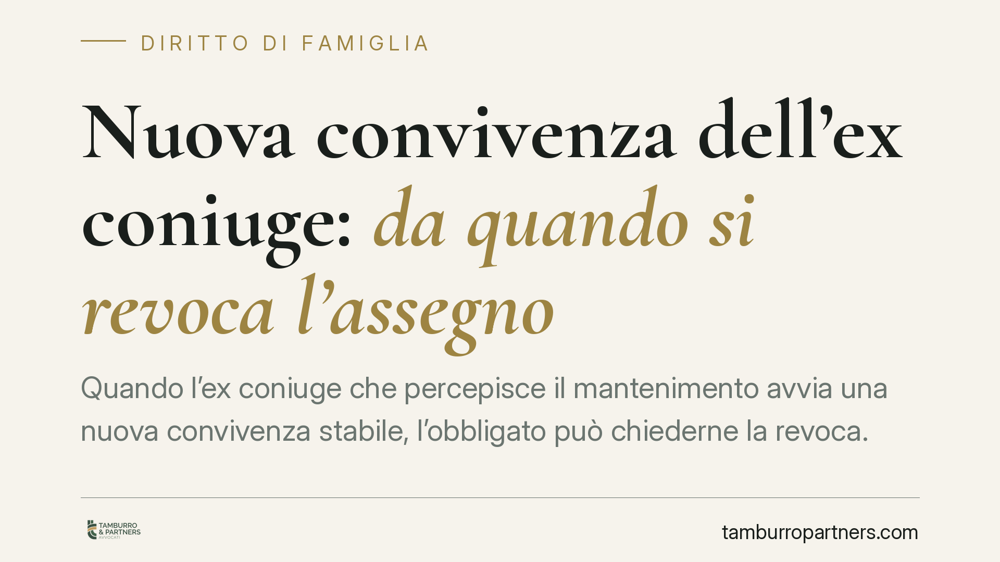

Nuova convivenza dell'ex coniuge: da quando si revoca l'assegno
Quando l'ex coniuge che percepisce il mantenimento avvia una nuova convivenza stabile, l'obbligato può chiederne la revoca. Un recente orientamento della Cassazione chiarisce un punto delicato: gli effetti della revoca decorrono dalla domanda giudiziale, non dall'inizio della nuova relazione. Una precisazione che incide direttamente sulle somme dovute e sulla strategia processuale.

Il punto della questione
Il tema è ricorrente nei contenziosi familiari: l'ex coniuge beneficiario del mantenimento instaura una nuova convivenza stabile. L'obbligato ritiene venute meno le ragioni del contributo e chiede al giudice di revocarlo. Ma da quale momento la revoca produce effetti? Dalla data in cui si è formata la nuova coppia o dal deposito della domanda giudiziale?
Secondo un orientamento della Corte di Cassazione, la revoca del mantenimento da separazione per nuova convivenza stabile decorre dalla data di deposito della domanda giudiziale, non dal momento — spesso incerto e difficile da provare — in cui la nuova relazione ha assunto carattere stabile.
> Avvertenza di verifica. Il riferimento numerico di dettaglio dell'ordinanza citata dalla fonte (n. 14864/2026, 18 maggio 2026) non risulta ad oggi confermabile sulle banche dati ufficiali e va trattato con cautela. In questa sede richiamiamo quindi il principio come orientamento della Cassazione, invitando a verificarne gli estremi esatti prima di qualunque uso processuale.
Inquadramento normativo
Occorre distinguere nettamente due figure spesso confuse.
Il mantenimento da separazione è disciplinato dall'art. 156 c.c.: presuppone un vincolo coniugale ancora in essere e può essere modificato o revocato dal giudice al mutare delle condizioni dei coniugi (art. 156, ultimo comma). È su questo assegno che incide il principio della decorrenza dalla domanda: finché non interviene un provvedimento di revoca, l'obbligazione resta in vita, e gli effetti della modifica si ancorano al momento in cui il giudice è stato investito della questione.
Diverso è l'assegno divorzile, regolato dall'art. 5 della L. 898/1970. Qui le Sezioni Unite (Cass. SU n. 32198/2021) hanno affermato un principio più radicale: l'instaurazione di una convivenza stabile e continuativa da parte dell'ex coniuge comporta, di regola, la decadenza dal diritto all'assegno nella sua componente assistenziale. Si tratta di una logica distinta dalla mera revoca su domanda: non si discute solo del *quando*, ma del *se* il diritto permanga.
In sintesi: il principio della "decorrenza dalla domanda" qui commentato riguarda il mantenimento da separazione. Per il divorzio il quadro resta governato dall'orientamento delle Sezioni Unite sulla decadenza.
Frequentazione o convivenza stabile?
Non ogni nuova relazione rileva. La giurisprudenza distingue tra semplice frequentazione — anche assidua — e convivenza stabile, intesa come comunione di vita e di progetto, con coabitazione, condivisione di risorse e reciproca assistenza. È una valutazione di merito, da compiere caso per caso sulla base di elementi concreti: residenza comune, contribuzione alle spese, durata, progettualità. L'onere di provare la convivenza grava su chi chiede la revoca.
Implicazioni pratiche
Per l'obbligato, la regola della decorrenza dalla domanda ha un effetto diretto: ogni mese di ritardo nel depositare l'istanza è un mese di mantenimento che resta dovuto. Attendere di raccogliere prove "perfette" può tradursi in un costo economico rilevante.
Per il beneficiario, il principio offre una tutela: non si vede azzerare il contributo retroattivamente dal momento, spesso arretrato, in cui la nuova unione è nata. L'obbligazione resta ferma fino alla domanda.
Un principio di equilibrio
La scelta di ancorare la revoca alla domanda risponde a un'esigenza di bilanciamento. Da un lato tutela l'obbligato, che non deve pagare oltre il necessario una volta attivato il giudizio. Dall'altro protegge il beneficiario da revoche retroattive fondate su un momento genetico — l'inizio della convivenza — per sua natura sfuggente e difficile da datare. Si privilegia così un criterio oggettivo e certo, il deposito dell'atto, rispetto a uno incerto e potenzialmente arbitrario.
Cosa fare in concreto
- Non sospendete i pagamenti di vostra iniziativa. Interrompere il versamento prima del provvedimento del giudice espone ad azioni esecutive e a responsabilità: l'assegno resta dovuto fino alla revoca.
- Depositate tempestivamente la domanda. Poiché gli effetti decorrono dall'atto, agite appena disponete di indizi seri di convivenza stabile, senza attendere la prova definitiva.
- Documentate la convivenza. Raccogliete elementi concreti: residenza comune, contribuzione alle spese, durata e stabilità della relazione.
- Distinguete il vostro regime. Verificate se siete in separazione o in divorzio: le regole e gli esiti differiscono in modo sostanziale.
- Fate verificare gli estremi della pronuncia su banca dati ufficiale prima di fondarvi su un singolo precedente in giudizio.
---
*Contributo informativo a cura di Tamburro & Partners - Avv. Giuseppe Tamburro. Non costituisce parere legale.*
Ogni famiglia ha il suo equilibrio.
Separazione, divorzio, affidamento, assegno: se vuoi un confronto riservato su una specifica situazione, scrivi allo studio. Ti rispondiamo entro un giorno lavorativo.